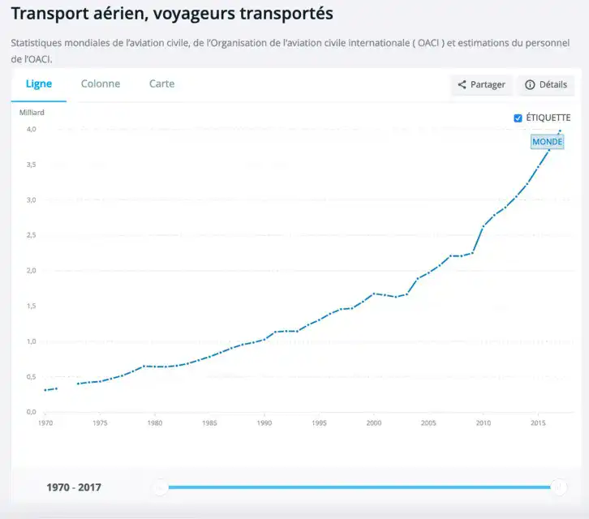

Accueil > Alternative
Quelles sont les alternatives à l’avion dans ce cas ?
Si l’avion semble être un moyen de transport très polluant, et donc à éviter, il ne faut pas pour autant y renoncer complètement. En effet, pour certaines destinations lointaines, l’avion est nécessaire, et s’il reste exceptionnel, ne pose pas tant de problèmes.
Cependant, la chose à faire serait de remplacer les voyages aériens par d’autres véhicules, pour des trajets raisonnables. Pour des trajets de moins de 800km, il faudrait donc privilégier le train, qui émet 300 fois moins de dioxyde de carbone que l’avion pour le même trajet. Le principal soucis concernant les vols en avion, c’est l’augmentation de ces derniers au cours des 50 dernières années. Si en 1975, on compte 10 millions de départ, on en compte en 2012, 50 millions. L’augmentation importante du nombre de vols et donc des émissions de CO2 est l’une des raisons pour laquelle il faut essayer de trouver des alternatives, ou tout du moins, réduire les vols.
On peut par exemple pointer du doigt la globalisation et la mondialisation, qui est à l’origine de nombreux échanges par voie aérienne. Car le transport des produits est à l’origine d’une part importante des émissions de CO2. Il faudrait alors réduire la demande et la consommation de produits venant de trop loin afin de développer les commerces de proximité. Ceci dans un but écologique. Privilégier le commerce local, éviter les produits importés par avion semble déjà être une idée intéressante pour nous, simples citoyens. Pour ce qui est des trajets, on peut également tenter de changer certaines habitudes, et essayer de réduites certaines pratiques. Le tourisme de masse, les voyages de quelques jours dans un pays limitrophe par avion, et autres trajets qui peuvent être évités, en avion au moins.
«Privilégier le commerce local, éviter les produits importés par avion»
On a également parlé de réduire les voyages, mais cela ne signifie pas d’arrêter de voyager évidemment. Il est uniquement question de privilégier le train à l’avion pour les distances qui le permettent. En effet, le train est le moyen de transport le plus écologique. En plus d’émettre beaucoup moins de CO2, il est également moins gourmand en énergie, et reste plus silencieux, donc respectueux, pour les populations aux alentours. De plus, il sera possible de développer des trains complètement électriques, donc sans rejets de CO2.
Si l’on veut réduire les émissions de dioxyde de carbone, responsables de l’effet de serre, nous devons diminuer le trafic aérien qui produit une grande partie (12%) des émissions de CO2. Privilégiez donc le train pour les moyennes distances, ou encore la voiture. Consommez local, baissez votre demande de marchandises trop lointaines, qui nécessitent des importations par avion.